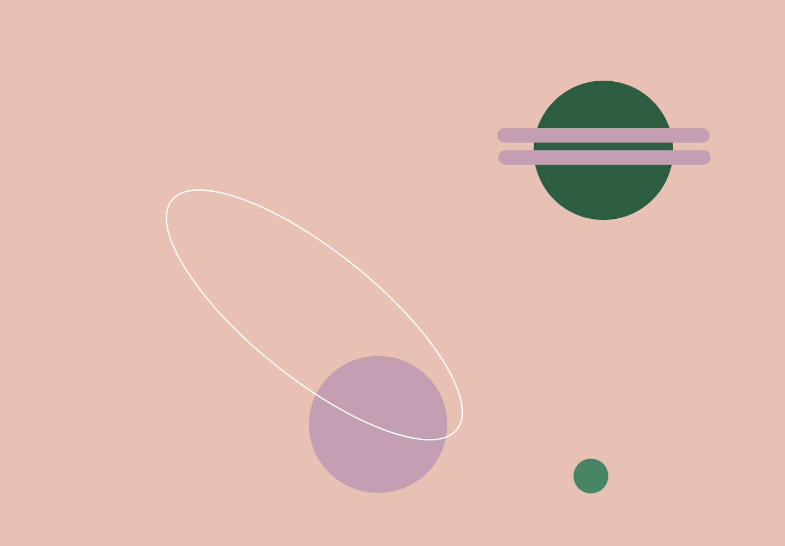
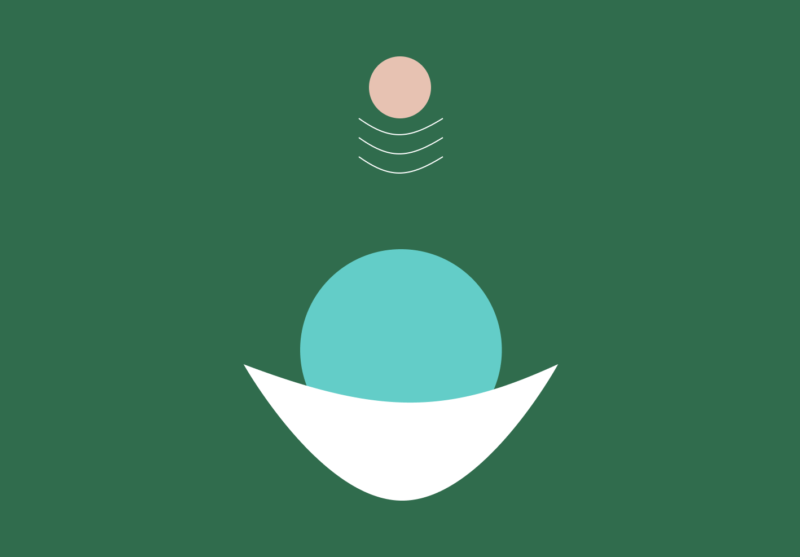
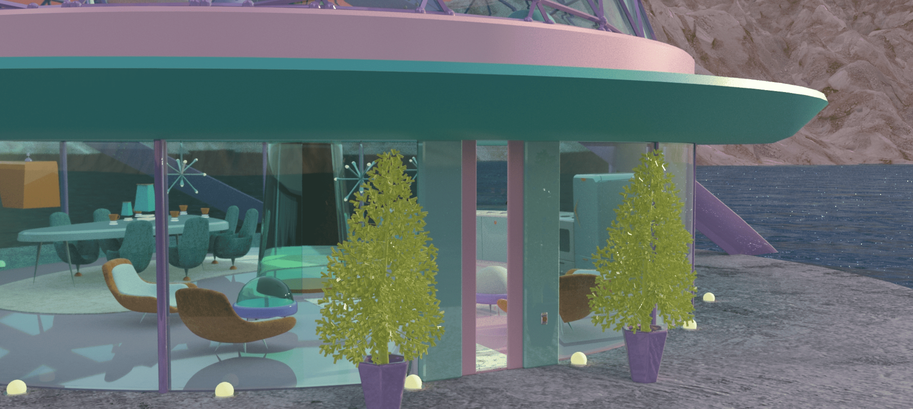

The Atomic Age
2020. Prototipo 3D, 3DMAX.


Prototipo creado mediante el diseño de la “Era Atómica” la cual era una expresión usada durante un tiempo en la década de 1950, donde se creía que las fuentes de energía del futuro serían nucleares.
Se utilizó inspiración de la gráfica y la arquitectura encontrando así formas de boomerang, formas orgánicas, formas de átomo y repetición de elementos para la creación del prototipo.
Como paleta cromática se utilizaron texturas de colores para objetos como sillones en naranjas, rosas, celestes y verdes que van en composé con la paleta cromática de la “Era atómica”, los cuales son colores estridentes y llamativos.
Por otro lado se utilizó otra paleta para materiales como el metal en una amplia variedad de colores, manteniendo la estética de la época.
Además se utilizó la tipografía “Atomic Age” para la creación de planogramas sobre el prototipo.